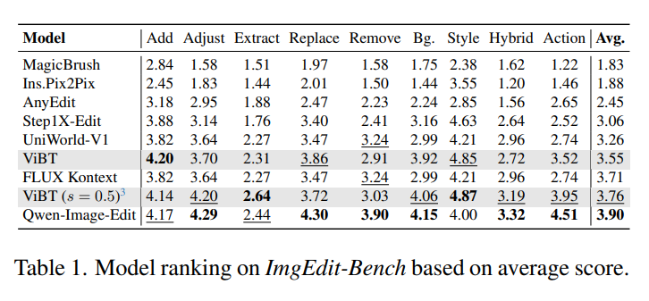

Introduction
Qwen-Edit, based on the Qwen large language model architecture, is recognized as a State-of-the-Art (SOTA) image editing foundation model. Its architecture integrates advanced text-image alignment and diffusion model technology to achieve high-precision semantic and appearance editing, setting a new benchmark for complex instruction following.
This report evaluates Qwen-Edit against two high-speed alternatives, SwiftEdit (SE) and DMD2, under rigorous experimental conditions on an NVIDIA RTX 3090. The objective is to determine if Qwen-Edit's superior cognitive capacity justifies its higher computational cost when performing complex, non-trivial image transformations.
As shown in the following table from ImgEdit-Bench, Qwen-Image-Edit achieves the highest average score, confirming its SOTA status. 1. Complete Comparison Table
| ID | Source Prompt → Edit Prompt | Source Image | SwiftEdit | DMD2 | Qwen-Edit | Winner | Key Observation |
|---|---|---|---|---|---|---|---|
| 00 |
Source: a slanted mountain bicycle on the
road in front of a building Edit: a slanted rusty mountain motorcycle in front of a fence |

|
 |
 |
 |
Qwen | Qwen-Edit: Added fence/rust. DMD2: Success on motorcycle, ignored fence. SwiftEdit: Texture change only. |
| 01 |
Source: a round cake with orange
frosting on a wooden plate Edit: a square cake with strawberry frosting on a plastic plate |
 |
 |
 |
 |
Qwen | Qwen-Edit: Success. DMD2: Failed geometric change (Round->Square). SwiftEdit: No visible change. |
| 02 |
Source: a cat sitting on a wooden
chair Edit: a red dog with flowers in mouth standing on a metal chair |
 |
 |
 |
 |
Qwen | Qwen-Edit: Accurate red dog + flowers. DMD2: Wrong color/pose/chair. SwiftEdit: Wrong color/pose/chair. |
| 03 |
Source: blue light, a black and white cat is playing
with a flower Edit: blue light, a black and white dog is playing with a yellow ball |
 |
 |
 |
 |
Qwen | Qwen-Edit: Accurate dog + yellow ball. DMD2: Correct dog + ball color, weird ball-flower artifact. SwiftEdit: Still a cat. |
| 04 |
Source: a cat sitting next to a mirror Edit: a silver cat sculpture standing next to a mirror |
 |
 |
 |
 |
Qwen | Qwen-Edit: Perfect material transfer. DMD2: Refused to change fur to metal. SwiftEdit: Noisy/degraded texture. |
| 06 |
Source: a cup of coffee with drawing of
tulip putted on the wooden table Edit: a yellow cup of milk with drawing of rose putted on the wooden table |
 |
 |
 |
 |
Qwen | Qwen-Edit: Perfect execution of Yellow Cup + Milk + Rose. DMD2: Failed to change cup color or liquid. SwiftEdit: Partial shape change, wrong colors. |
| 07 |
Source: a german shepherd dog stands on the grass with
mouth closed Edit: a white german shepherd dog sits on the grass with big mouth opened |
 |
 |
 |
 |
Qwen | Qwen-Edit: Handled complex pose change (Sit). DMD2: Only opened mouth, ignored sit/white. SwiftEdit: Changed color/mouth, failed pose. |
| 09 |
Source: a dog is laying down on a white
background Edit: Painting of a lion laying down on a blue background |
 |
 |
 |
 |
Qwen | Qwen-Edit: Success, complete regeneration. DMD2: Technical Failure (Black Image). SwiftEdit: Distorted Corgi. |
| 26 |
Source: a yellow bird with a red beak
sitting on a branch Edit: a toy cat with a red fur sitting on a branch |
 |
 |
 |
 |
Qwen | Qwen-Edit: Perfect toy cat, retained forest bg. DMD2: Toy cat but wrong color (Orange). SwiftEdit: Looks like a distorted bird. |
| 27 |
Source: a opened eyes cat sitting on wooden
floor Edit: a closed eyes dog sitting on green grass |
 |
 |
 |
 |
Qwen | Qwen-Edit: Total scene rewrite (Dog+Grass). DMD2:Acurrate dog, but failed species close eyes. SwiftEdit: Closed eye, but failed species/bg. |
| 28 |
Source: white flowers on a tree branch with blue
sky background Edit: Painting of red flowers on a tree branch with white background |
 |
 |
 |
 |
Qwen | Qwen-Edit: Perfect style transfer. DMD2: Changed color, ignored bg. SwiftEdit: Failed. |
| 93 |
Source: a collie dog is sitting on a
bed Edit: a Garfield cat is sleeping on a sofa |
 |
 |
 |
 |
Qwen | Qwen-Edit: Orange striped cat + Sofa. DMD2: Striped cat but wrong pose. SwiftEdit: Cat on bed (not sofa). |
| 95 |
Source: a painting of a fairy with green wings holding
a glowing jar Edit: a painting of a fairy with purple wings holding a white crystal ball |
 |
 |
 |
 |
Qwen | Qwen-Edit: Perfect Purple Wings + Crystal Ball. DMD2: Crystal ball success, wings stayed green. SwiftEdit: Color shifts, wings stayed green. |
| 98 |
Source: a light bulb hanging from a wire with
sky in the background Edit: a cat hanging from a wire with grass in the background |
 |
 |
 |
 |
Qwen | Qwen-Edit: Cat hanging + Grass background. DMD2: Made a wind chime, no cat. SwiftEdit: Cat face inside bulb artifact. |
2. System Requirements & Performance
Resource Utilization (RTX 3090)
| Model | VRAM Usage | Inference Speed |
|---|---|---|
| SwiftEdit (SE) | 22 GB | 0.67s |
| DMD2 | 18 GB | 3s |
| Qwen-Edit | 23 GB | 30s |
3. Experimental Configurations
| Parameter | SwiftEdit | DMD2 |
|---|---|---|
| Base Model | SBv2 (SD 2.1) | SDXL 1.0 |
| IP-Adapter | IP-SBv2 | IP-Adapter-Plus SDXL (ViT-H) |
| Inference Step | 1 step | 4 step (via LoRA) |
| Latent Source | Inversion Model (same architecture as SBv2) | ReNoise Inversion (arXiv:2403.14602) |
4. Conclusions & Recommendations
Based on the experimental data, the conclusion is clear:
- SwiftEdit is fast (0.67s) but ineffective for meaningful editing; it often produces noise or minimal changes.
- DMD2 is efficient (3s, 18GB VRAM) but suffers from rigidity; it struggles to alter the structure or geometry of an image.
- Qwen-Edit is the only viable solution for professional-grade editing.